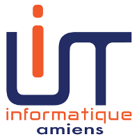

Cyril Lemaire
Contact :
- 06 83 26 71 63
- cyril.lemaire.pro@gmail.fr
-
49, rue de Châtenay, bât D1
92160 Antony
Études :
-
2016-2017:
 Wild Code School
Wild Code School
Diplôme de Développeur Web
-
2015-2016:

I.U.T. Informatique d'Amiens
Année spéciale
-
2013-2015:
 Université Paris XI
Université Paris XI
Licence 1 Math-Physique-Informatique
-
2012-2013:
 CPGE Intégrée à CPE Lyon
CPGE Intégrée à CPE Lyon
filière électronique
- 2011-2012: Bac S, mention Bien
Langues vivantes :
- Anglais : bon
- Espagnol : notions
Mes loisirs :
- Courir (5/10km)
- Jouer à des jeux vidéos de logique (Portal, The Witness, The swapper, Prelogate, ...)
- Lire des mangas/manwhas
Développeur web junior
Mes expériences
Haras de la métamorphose [code source]
Projet client complexe sur Symfony visant à accompagner la création du Haras de la métamorphose à Compiègne. Il a fallu créer un site similaire à un blog permettant d'entamer l'échange avec les futurs consommacteurs du site et valoriser les différents domaines d'activité en cours de création (sports, arts, familial, entreprises, ...) tout en permettant la plus grande simplicité d'administration et une très grande modularité pour pouvoir suivre les évolutions futures (site bilingue dont la totalité des pages sont modifiables à volonté)
Projet final de la Wild Code School [code source]
Projet de démonstration technique (sans client, l'aspect esthétique du site n'a pas été abordé). Ce site permet la création de joueurs et d'équipes de Quidditch, manuellement ou en création automatique via l'API randomuser et la constitutions de match et de tournois. Il offre une prise en charge des informations personnelles des joueurs (photos, expérience, endurance) évoluant automatiquement au fil des matchs. La constitution des équipes (rôles et nombre de joueurs par rôle) est entièrement administrable, et la création automatique s'adapte en conséquence.
Files Sharing [code source]
Projet de découverte sur Ruby-on-rails. Ce projet permet l'hébergement de fichier en ligne, et il permet d'en autoriser le téléchargement et la modification à des utilisateurs tiers via des partages nominatifs ou des groupes de partages entièrement administrables par les utilisateurs.
Mes compétences informatiques
- PHP (symfony) - Ma référence en développement web.
- Ruby (ruby-on-rails) - Mon langage préféré en développement algorithmique, faiblesses sur rails.
- Javascript (JQuery, Ajax) - A l'aise sur une utilisation front-end (jamais fait de full-stack).
- Python, C++ - Mes langages "maternels"
- Java, C#, PascalProcessing - Quelques expériences
- Algorithmique - Réalisation de nombreux algorithmes sur divers sites( codewars, CodinGame, Project Euler )